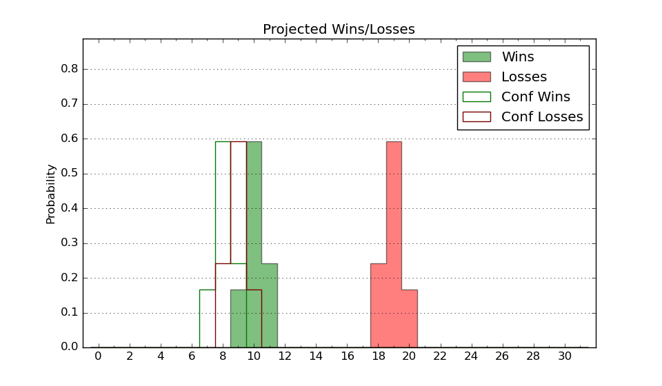

| Home | Game Probabilities | Conferences | Preseason Predictions | Odds Charts | NCAA Tournament |
| City: | West Hartford, Connecticut | |
| Conference: | Independent (2nd)
| |
| Record: | 0-2 (Conf) 2-23 (Overall) | |
| Ratings: | Comp.: -32.3 (362nd) Net: -32.5 (362nd) Off: 86.0 (362nd) Def: 118.4 (360th) SoR: 0.0 (151st) |
| Remaining | ||||||
|---|---|---|---|---|---|---|
| Date | Opponent | Win Prob | Pred. | |||
| Previous | Game Score | |||||
| Date | Opponent | Win Prob | Result | Off | Def | Net |
| 11/8 | Sacred Heart (337) | 30.0% | L 70-77 | -3.6 | 1.1 | -2.5 |
| 11/12 | @St. Francis PA (335) | 10.9% | L 53-77 | -22.4 | 7.1 | -15.3 |
| 11/17 | @Boston University (269) | 5.2% | L 66-102 | 7.7 | -26.6 | -18.9 |
| 11/25 | @Penn (134) | 1.6% | L 55-75 | -3.9 | 14.2 | 10.2 |
| 11/26 | (N) Delaware (225) | 6.4% | L 50-78 | -16.9 | 4.7 | -12.2 |
| 11/27 | (N) Colgate (115) | 2.3% | L 58-92 | 3.8 | -14.0 | -10.2 |
| 11/30 | Fairleigh Dickinson (331) | 26.4% | W 74-66 | 5.0 | 21.0 | 25.9 |
| 12/4 | Brown (175) | 7.1% | L 51-65 | -7.8 | 13.0 | 5.2 |
| 12/6 | @St. Francis NY (353) | 15.1% | L 50-68 | -8.1 | -0.0 | -8.1 |
| 12/13 | Saint Peter's (323) | 24.9% | L 57-58 | -6.8 | 21.9 | 15.1 |
| 12/17 | St. Francis NY (353) | 37.7% | L 51-67 | -21.8 | 0.4 | -21.4 |
| 12/22 | @San Francisco (110) | 1.2% | L 53-85 | -2.3 | 3.8 | 1.5 |
| 12/30 | Morgan St. (278) | 16.3% | L 54-61 | -11.9 | 19.4 | 7.5 |
| 1/7 | @Sacred Heart (337) | 11.2% | L 71-78 | 10.8 | -4.2 | 6.5 |
| 1/10 | @St. Francis NY (353) | 15.1% | L 73-78 | 20.8 | -15.1 | 5.8 |
| 1/16 | @UMBC (258) | 4.7% | L 62-87 | 4.6 | -10.2 | -5.6 |
| 1/18 | @Morgan St. (278) | 5.4% | L 84-92 | 28.9 | -17.5 | 11.4 |
| 1/23 | Penn (134) | 5.2% | L 52-76 | -4.9 | -5.6 | -10.5 |
| 1/25 | Stonehill (316) | 22.7% | W 73-56 | 20.9 | 19.7 | 40.5 |
| 2/4 | Chicago St. (267) | 15.5% | L 49-62 | -18.6 | 11.3 | -7.3 |
| 2/6 | UMass Lowell (133) | 5.2% | L 48-70 | -16.3 | 11.5 | -4.8 |
| 2/8 | Central Connecticut (346) | 33.0% | L 73-82 | 16.0 | -26.0 | -10.0 |
| 2/13 | @South Alabama (126) | 1.4% | L 53-77 | 5.2 | -2.5 | 2.7 |
| 2/16 | Merrimack (303) | 21.0% | L 59-67 | 1.5 | -5.8 | -4.4 |
| 2/19 | @Chicago St. (267) | 5.1% | L 53-75 | 0.0 | -9.2 | -9.2 |
| Stats & Trends | |||||
|---|---|---|---|---|---|
| Current | Day | Week | Month | Season | |
| Composite | -32.3 | +0.0 | +0.1 | -3.2 | -18.8 |
| Comp Rank | 362 | -- | +1 | -- | -35 |
| Net Efficiency | -32.5 | +0.0 | +0.1 | -2.3 | -- |
| Net Rank | 362 | -- | +1 | -- | -- |
| Off Efficiency | 86.0 | +0.1 | +0.0 | -0.3 | -- |
| Off Rank | 362 | -- | -- | -4 | -- |
| Def Efficiency | 118.4 | -0.0 | +0.0 | -2.1 | -- |
| Def Rank | 360 | -- | +2 | -- | -- |
| SoS Rank | 350 | -- | +3 | +6 | -- |
| Exp. Wins | 2.0 | -- | -- | -1.1 | -8.4 |
| Exp. Conf Wins | 0.0 | -- | -- | -0.3 | -1.2 |
| Conf Champ Prob | 0.0 | -- | -- | -25.7 | -80.5 |

| Advanced Stats | ||
|---|---|---|
| Stat | Value | Rank |
| Off Eff FG % | 0.459 | 328 |
| Off Ast Ratio | 0.129 | 273 |
| Off ORB% | 0.207 | 337 |
| Off TO Rate | 0.203 | 359 |
| Off FT Ratio | 0.224 | 359 |
| Def Eff FG % | 0.583 | 360 |
| Def Ast Ratio | 0.187 | 359 |
| Def ORB% | 0.341 | 355 |
| Def TO Rate | 0.143 | 267 |
| Def FT Ratio | 0.301 | 146 |